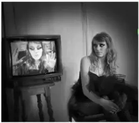
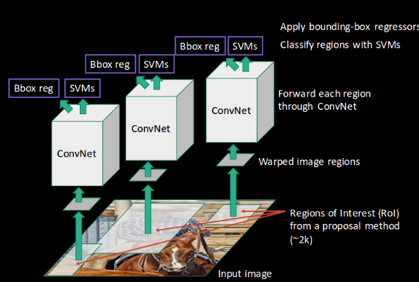
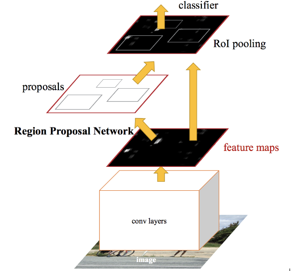

1. CNN简介
本文将从RCNN开始，对RCNN家族的目标检测算法进行阐述，包括 RCNN，Fast RCNN，Faster RCNN，Mask RCNN 以及 Mask Score RCNN
CNN（卷积神经网络）作为目前重要的特征提取方法，通过将原图像经过卷积、池化等操作提取图像区域特征，将此特征作为后续图像处理的基础。以文章[1]中举出的目标检测方法为例
- 输入原图像
- 将原图像分块:

- 将每个区域看作单独的图片。
- 把这些区域照片传递给CNN，将它们分到不同类别中。
- 当我们把每个区域都分到对应的类别后，再把它们结合在一起，完成对原始图像的目标检测：
使用这一方法的问题在于，图片中的物体可能有不同的长宽比和空间位置。例如，在有些情况下，目标物体可能占据了图片的大部分，或者非常小。目标物体的形状也可能不同。
有了这些考虑因素，我们就需要分割很多个区域，需要大量计算力。所以为了解决这一问题，减少区域的分割，我们可以使用基于区域的CNN，它可以进行区域选择
2. RCNN
¶2.1 RCNN简介
RCNN算法提出在图像中创建多个边界框，检查这些边框中是否含有目标物体。RCNN使用选择性搜索来从一张图片中提取这些边框。
这里感觉和滑动窗口的方法类似
首先，明确什么是选择性搜索，以及它是如何辨别不同区域的。组成目标物体通常有四个要素：变化尺度、颜色、结构（材质）、所占面积。选择性搜索会确定物体在图片中的这些特征，然后基于这些特征突出不同区域。
下面是选择搜索的一个简单案例：
|  | ||
|---|---|---|
| 将一张图片作为输入 | 生成最初的区域分割（sub-segmentations）， 将图片分为多个区域 |
基于颜色、结构、尺寸、形状等， 将相似的区域合并成更大的区域 |
最后， 生成最终的目标物体位置（Region of Interest）
总结下来,RCNN检测目标物体的步骤如下：
1️⃣选取一个预训练卷积神经网络。
2️⃣ 根据需要检测目标类别数量，训练网络的最后一层。
3️⃣ 得到每张图像的感兴趣区域（ Region of Interest），将感兴趣区域变为同样的大小送入到CNN中
4️⃣ 得到感兴趣区域后，训练SVM分类目标和背景区域。对每一类都训练一个二分类SVM
5️⃣ 最后，训练一个线性回归模型，对图像中的每个识别物体生成一个包围盒（bounding boxes）
使用具体案例进行分析：
-
首先输入原图像
-
提取感兴趣区域（ROI），使用候选算法（proposal method）如：上述提到的选择搜索（selective search）
-
对每个提取的区域进行形状重塑（reshaped ）为大小一样的图像，送入到相同的卷积网络中
-
卷积神经网络对每个区域提取的特征，并使用SVM对每个区域进行分类
-
最后，对每个识别的区域进行边框回归/包围盒回归（bounding box regression，Bbox reg）
 -
简言之，上述就是RCNN检测的方法。
¶2.2 RCNN存在的问题
训练RCNN模型非常复杂，并且步骤较多
- 根据选择性搜索，可能需要对每张图像提取2000个单独的区域。
- 用CNN提取每个区域的特征。假设有N张图片，那么CNN提取特征的数量就是N * 2000 ；
- 使用RCNN进行目标检测需要经过三个步骤：
- CNN特征提取
- 使用线性分类器SVM识别
- 使用回归模型生成紧凑的包围盒
🔎 上述的处理方法使得RCNN的处理速度非常慢。每处理一张新的图片需要40~50秒，这使得整个模型非常的笨重，几乎不可能处理大型数据集。
🔧 为了解决上述问题所带来的限制，提出了一种新的目标检测方法。
3. Fast RCNN
¶3.1 Fast RCNN简介
想要减少RCNN算法的计算时间，可以用什么方法？我们可不可以在每张图片上只使用一次CNN即可得到全部的重点关注区域呢（regions containing some object），而不是运行2000次。
RCNN的作者Ross Girshick提出了一种想法，在每张照片上只运行一次CNN，然后找到一种方法在2000个区域中进行计算。在Fast RCNN中，我们将图片输入到CNN中，会相应地生成传统特征映射。利用这些映射，就能提取出感兴趣区域。之后，我们使用一个Rol池化层将所有提出的区域重新修正到合适的尺寸，以输入到完全连接的网络中。
简要概括上述步骤：
1️⃣如上述的方法所述，先选择一张图像输入。
2️⃣图像通过卷积网络生成感兴趣区域
3️⃣通过ROI池化层对每个感兴趣区域进行操作。之后将每个区域送入到全连接网络中
4️⃣在送入全连接之后通过softmax层输出类别。同样使用一个线性回归层，输出相对应的边界框。
所以，和RCNN所需要的三个模型不同，Fast RCNN只用了一个模型就同时实现了区域的特征提取、分类、边界框生成。
同样适用上述的图片进行讲解：
-
输入图像

-
传递到卷积网路中生成相应的感兴趣区域
-
适用ROI池化层将每个感兴趣区域设置为同样大小
-
最后，将这些区域送入到全连接层进行分类，同时使用softmax和线性回归来预测边界框

上述过程就表明了Fast RCNN如何让解决RCNN主要问题的方法。通过一个卷积网络代替2000个卷积网络；使用一个模块代替RCNN中的特征提取，分类和生成包围盒三个模块。
¶3.2 Fast RCNN所存在的问题
🔎 尽管如此，Fast RCNN仍然存在一些问题。它仍然使用选择性搜索方法寻找感兴趣区域。这种处理方法仍然很慢，与RCNN不同的是，Fast RCNN处理一张图片大约需要2秒。但是在大型真实数据集上，这种速度仍然不够理想。
🔧 为了解决搜索缓慢的问题，提出另一种胜过Fast RCNN的目标检测算法
4. Faster RCNN
¶4.1 Faster RCNN简介
Faster RCNN是Fast RCNN的优化版本，二者主要的不同在于感兴趣区域的生成方法，Fast RCNN使用的是选择性搜索，而Faster RCNN用的是Region Proposal网络（RPN/候选区域网络）。RPN将图像特征映射作为输入，生成一系列object proposals，每个都带有相应的分数。
下面是Faster RCNN的处理过程：
1️⃣ 输入图像到卷积网络中，生成该图像的特征映射；
2️⃣ 在特征映射上应用RPN，返回候选物体（object proposals）和相应的分数 🔔
3️⃣ 应用ROI池化层，将所有的proposals修正到同样的尺寸。
4️⃣ 最后，将proposals送入到全连接层，并使用softmax和线性回归层来输出目标物体的包围盒。
Faster RCNN中的重要改进部分是RPN网路，总体的处理流程简化如下图：

那么Region Proposal Network具体是如何工作的呢？首先，将CNN中得来的特征映射输入到Faster RCNN中，然后将其传递到Region Proposal Network中。RPN会在这些特征映射上使用一个滑动窗口，每个窗口会生成具有不同形状和尺寸的k个anchor box：

Anchor boxes是固定尺寸的边界框，它们有不同的形状和大小。对每个anchor，RPN都会预测两点：
- 首先是anchor就是目标物体的概率（不考虑类别）
- anchor经过调整能更合适目标物体的边界框回归量
现在我们有了不同形状、尺寸的边界框，将它们传递到Rol池化层中。经过RPN的处理，proposals可能没有所述的类别。我们可以对每个proposal进行切割，让它们都含有目标物体。这就是Rol池化层的作用。它为每个anchor提取固定尺寸的特征映射
¶4.2 Faster RCNN详解
具体完整细节可参考文章 (2)，其将Faster RCNN分为4个部分：
- 卷积层（Conv layers）：Faster RCNN首先使用一组基础的conv+relu+pooling层提取image的feature maps。该feature maps被共享用于后续RPN层和全连接层。
- 候选区域网络(Region Proposal Networks , RPN)：RPN网络用于生成候选区域。该层通过softmax判断anchers属于positive或者negative，再利用包围盒回归（bounding box regression）修正anchors,获得精确的预测。
- 感兴趣区域池化（ROI Pooling）：该层收集输入的feature maps和proposals，综合这些信息后提取proposal feature maps，送入后续全连接层判定目标类别。
- 分类（classification）：利用proposal feature maps计算proposal的类别，同时再次bounding box regression获得检测框最终的精确位置。
摘取文章中对RPN网络的详解（其他部分参照文章(2)）：
先给出faster_rcnn_test的网络结构：


🔔 RPN网络实际分为2条线，上路径通过softmax分类anchors获得positive和negative分类，下路径用于计算对于anchors的bounding box regression偏移量，以获得精确的proposal。
🔔 而最后的Proposal层则负责综合positive anchors和对应bounding box regression偏移量获取proposals，同时剔除太小和超出边界的proposals。
🔔 其实整个网络到了Proposal Layer这里，就完成了相当于目标定位的功能。
5. Mask RCNN
本博客所有文章除特别声明外，均采用 CC BY-SA 3.0协议 。转载请注明出处！